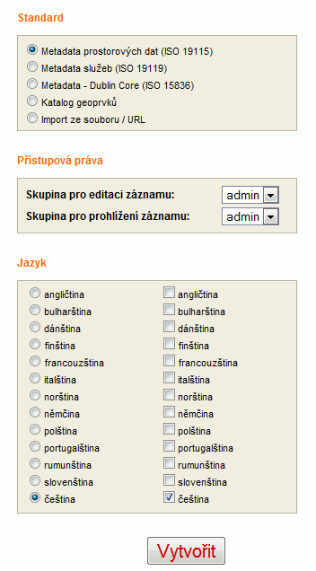

Micka - nápověda
- Úvod
- Vyhledávání záznamů
- Editování záznamů
- Administrace
- Pokyny k vyplňování metadat
1. Úvod
Micka je systém pro práci s metadaty prostorových dat podle standardů ISO, OGC a INSPIRE.
Podporované standardy
Systém je utvořen tak, že je možno implementovat libovolný standard, který je reprezentován XML dokumentem. Pro vložení struktury standardu existuje zvláštní správcovský modul.
V současné verzi jsou podporovány tyto standardy:
- Metadata prostorových dat (ISO 19115)
- Metadata webových služeb (ISO 19119)
- Katalog geoprvků (Feature catalog)(ISO 19110) - část potřebná pro popis geoprvků atributů datových sad
- Metadata Dublin Core
Profily
Systém umožňuje přidávat další nadstandardní metadatové položky a pracovat s uživatelskými profily (podmnožinou položek).
V současné době jsou pro ISO 19115 definovány tyto profily:
- Povinné položky dle normy ISO
- Jádro (core elements) dle normy ISO
- Plný standard
- Profil INSPIRE
- Profil MICKA (obsahuje elementy INSPIRE a některé navíc, které považujeme za důležité k popisu dat)
- Uživatelské profily
Mezi profily je možno přepínat během editování.
Jazykové prostředí
Uživatelské prostředí je vícejazyčné, v současné době je podporováno 12 jazyků.
Výběr jazyků je nastaven v konfiguračním souboru aplikace, proto nemusí být v aplikaci všechny přístupné.
Další jazyky je možno přidat na přání. Přepínat mezi jazyky je možno ťuknutím na odpovídající vlaječky v horní liště programu.
Samotná metadata je možno paralelně vyplňovat v různých jazycích podle volby uživatele. Ve všech případech je používána kódová stránka UTF-8.
2. Vyhledávání záznamů
Aplikace podporuje základní vyhledávání záznamů. Další možnosti vyhledávání jsou zpřístupněny pomocí katalogové služby OGC, která je souřástí instalace.
Stisknutím tlačítka v levém sloupci se zobrazí tento vyhledávací formulář (
informace o jednotlivých prvcích získáte klepnutín na odpovídající prvek).
Význam jednotlivých položek:
Slova: Vyhledávání metadat podle zadaných termínů. Toto vyhledávání má několik voleb:
- V textu - vyhledává ve všech položkách metadat.
- V klíčových slovech - vyhledává pouze v zadaných klíčových slovech (volných nebo zadaných z thesauru)
- Přesné znění - vyhledává zadaný výraz v přesném znění součást textu.
- Některé slovo - hledá výskyt alespoň jednoho slova v zadaném řetězci
- Všechna slova - hledá výskyt všech slov v libovolném pořadí
Tématická kategorie: Zadání tématické kategorií definovaných v ISO 19115.
Časový rozsah : Zadání časového rozsahu. Zadejte datum ve tvaru DD.MM.RRRR (v české verzi), např. "19.02.2006", RRRR-MM-DD (v anglické verzi), např. "2006-02-19".
Standard : Zadání názvu standardu.
Jazyk : Zadání jazyka, ve kterém jsou metadata.
Výřez : Zadání výřezu zeměpisnými souřadnicemi.
Data pouze ve výřezu : Zaškrtnutím se zajistí, že vyhledané záznamy budou prostorový rozsah, který plně spadá do zadaného výřezu. Není-li výřez zadán, tato volba neovlivní výběr.
Z mapy: Zadání výřezu výběrem v mapě. Ovládání mapy:
- Zvětšení. Stisknutím a táhnutím v mapě zvětšíte na odpovídající výřez.
- Zmenšení. Stisknutím a táhnutím v mapě zmenšíte mapu podle výřezu.
- Posunutí. Stisknutím a táhnutím v mapě zmenšíte mapu podle výřezu.
- Výřez. Stisknutím a táhnutím v mapě zadáte výřez pro výběr metadat. Souřadnice se zapíší odpovídajících položek ve formuláři.
- Výřez z rozsahu mapy. Stisknutím bude aktuální výřez mapy zapsán do odpovídajíácích položek ve formuláři jako výřez pro vyhledání metadat.
- Celý rozsah. Stisknutím se zobrazí celá mapa.
POZOR! Mezi všemi položkami vyhledávacího formuláře platí průnik (logické AND), pokud nejsou položky vyplněny, nejsou pro výběr uvažovány.
Po vyhledání se zobrazí seznam nalezených vět ve tvaru:
kde
- je příklad označení typu záznamu. Záznamy mohou být rozlišeny těmito ikonkami:
- Metadata prostorových dat (ISO 19115)
 Metadata Dublin Core
Metadata Dublin Core- Metadata webové služby (ISO 19119)
- Katalog geoprvků (ISO 19110)
- <uživatel> je systémové jméno uživatele, který metadata pořídil. Zobrazuje se jen uživatelům, kteří mají právo editovat záznamy.
- jsou tlačítka pro editování a smazání záznamu. Zobrazují se jen uživatelům, kteří mají právo editovat záznamy.
Ve výpisu jsou barevně odlišena záhlaví pro typy záznamů: soukromý / veřejný . Více v sekci o
editování dat.
Ťuknutím na název datové sady se zobrazí přehledná metadata datové sady. Na konci jejich výpisu je pak možné zobrazit úplný výpis metadat.
V případě více nalezených záznamů jsou výsledky jsou stránkovány, na další/předchozí stranu přejdete pomocí ovládacích prvků na konci stránky.
3. Editování záznamů
Přihlášení uživatelé mohou v různé míře podle svých práv vytvářet, importovat/exportovat a měnit metadatové záznamy.
Vytvoření nového záznamu:
V levém menu stiskněte tlačítko:
Zobrazí se dialog pro vytvoření nového záznamu:

Zde nastavíte:
Odpovídající standard
Přístupová práva (která skupina uživatelů smí číst a která editovat)
Jazyky metadat (Podle ISO 19139 mají metadata jeden jazyk primární - v levém sloupci, a mohou mít několik daších jazyků - v pravém sloupci.
Pokud ve výběru stadardu zvolíte Import ze souboru/URL. Poté se na stránce objeví dialog pro import:
Zde zadejte buď
- Výběr souboru pro import nebo
- URL služby (OGC WMS/WFS/...), ze které se načte GetCapabilities dokument.
Prioritu má import souboru.
Pokud chcete aktualizovat již existující záznam s jiným identifikátorem, zadejte pomocí tlačítka [ Výběr záznamu pro update ] identifkátor existujícího záznamu.
Pokud importujete data ze souboru [ ESRI ISO metadata ], Můžete vybrat katalog geoprvků, do kterého naimportujete popis struktury datové sady.
Tlačítkem [ X ] výběry zrušíte.
Přepínačem "Existující záznam přepsat / ponechat" volít, zda se má záznam naimportovat i pokud existuje či ne.
Editace existujícího záznamu
Jakmile je záznam vytvořen, je možné přistoupit k editaci. Tatkto vypadá editační rozhranní aplikace.
Význam jedntlivých prvků je popsán pod obrázkem.
Popis jednotlivých prvků formuláře pro editaci dat:
Profil - u ISO 19115 implicitně se otevře jádro, je možné přepínat mezi dalšími předdefinovanými profily
Oddíl - u ISO 19115 v plném standardu je velikost záznamu příliš velká, proto je možné zobrazovat jednotlivé části - oddíly.
Při přepnutí mezi oddíly se data ukládají.
Názvy elementů - kopírují stromovou strukturu XML dokumentu odpovídajícího standardu. Jsou barevně odlišeny takto:
Typy polí formuláří - ve formuláři jsou odlišeny datové typy několika barvami:
Kontextová nápověda - Pokud umístíte kurzor nad popisku pole, obejví se kontextová nápověda. Je převzatá přímo z definic jednotlivých položek normy, případně doplněna o další výklad.
Výběr ze seznamů -
systém má možnost definovat různé výběry z předdefinovaných hodnot, případně integraci s dalšími programy (gazeeteery, thesaury) přes webové služby. Pomocí těchto tlačítek otevřete nové okno pro komunikaci s pomocnými programy.
POZOR! Chcete-li využít tyto funkce, musíte být umožněno ve otvírání vyskakujících oken pro tuto doménu Vašem prohlížeči.
Kontrola položek:
Během editace se v pravém horním rohu zobrazuje panel, na kterém se objevují ještě nevyplňené položky podle
požadavků směrnice INSPIRE. Po jejich vyplnění je nutno záznam průběžně
uložit, aby se
zde zobrazila změna. Tato kontrola nebrání uživateli uložit záznam a doplnit jej později.
Administrace záznamu
Pokud je záznam po vytvoření alespoň jednou uložen, objeví se v záhlaví odkaz
Administrace záznamu.
Ťuknutím na něj otevřete dialogové okno, ve kterém je kdykoli možno nastavit
- Skupinu uživatelů, která smí záznam editovat
- Skupinu uživatelů, která smí záznam prohlížet
- Zda je záznam veřejný (viditelný bez přihlášení pro všechny)
- Jazyky, ve kterých budou vyplňovány multiliguální položky
4. Administrace
Osoby s právy administrátora mají přístup do menu administrace.
Zde jsou tyto funkce:
- Editace metadata tree (Výběr položek do profilů metadat)
- Správa kontaktů (Tato volba je přístupná i pro dalčí uživatele přímo při zadávání kontaktů)
- Dávková kontrola profilu INSPIRE (Modul pro kontrolu metadat podle INSPIRE)
- Správa uživatelů (Přístupová práva pro jednotlivé uživatele)
5. Pokyny k vyplňování metadat
Vyplňování metadat prostorových dat vyžaduje určitou znalost norem,
proto doporučujeme školení či osobní konzultace s autory programu před vlastním vyplňováním záznamů.
Pro vyplňování doporučujeme použít metadatový profil
Micka, který obsahuje základní
potřebnou množinu metadatových pvků.
Popis položek profilu MICKA pro metadata prostorových dat:
| Položka | Popis | Příklad |
|---|
| jazyk metadat |
jazyk, ve kterém je pořízen metadatový záznam (může být více jazyků, podle normy je jeden primární) |
čeština |
| Identifikátor rodičovských metadat |
Pokud je popisovaný objekt (např. datová sada) součástí jiné datové sady (superset), je zde uveden odpovídající identifikátor (UUID) |
499a737a-221c-4941-b193-13a07f000001 |
| metadata - kontakt |
Ve většině případů kontaktní informace o straně, která spravuje tento metadatový záznam. Je možno vyplnit výběrem z předdefinovaného seznamu. |
Help Service ... |
| Prostorová reprezentace // typ geometrie objektů |
Geometrické typy obsažené v datech. Má význam jen u vektorových dat. |
linie |
| Referenční systém |
Kódy souřadnicových systémů, ve kterých je DS k dispozici. Výběr ze seznamu. |
EPSG:4326 |
| Identifikace/citace/název |
Název popisovaného zdroje (jedinečný v rámci organizace) |
HSTopo |
| kalendářní datum |
Datum, pořízení či aktualizace zdroje (je nutno vyplnit položku událost, která udává o jaký typ data jde) |
24.5.2006 - revize |
| abstrakt |
Stručný popis zdroje - obdoba abstraktu odborného článku. Jde v podstatě o nejdůležitější položku metadat. |
Základní topografická mapa středního měřítka... |
| účel vytvoření |
Důvod, proč byl zdroj pořízen (legislativní, výzkumné projekty apod.) |
ve vývoji ... |
| stav zpracování |
V jakém stavu je zpracování zdroje. Výběr z číselníku. |
|
| kontaktní místo |
Kontakt na stranu spravující či pořizující vlastní zdroj (tedy ne metadata). Důležité je vyplnění odpovídající role. |
Help Service ... správce |
| klíčová slova |
Volná klíčová slova nebo vybraná z thesauru GEMET (vyplňtě alespoň jedno slovo z tohoto thesauru - vyplňuje se pomomcí vyskakovacího okna [<< Z výběru]). |
přeprava, GEMET - Concepts, version 2.3 |
| omezení |
|
|
| prostorová reprezentace |
Určuje, zda jde o vetrorová či rastrová data (apod.). Výběr z číselníku. |
vektor |
| prostorové rozlišení |
Buď měřítko mapy nebo minimální vzdálenost pro rozlišení objektů (u rastrových dat uvádějte velikost pixelu.) Doporučujeme VŽDY uvést měřítko kvůli následným výběrům. |
50000 |
| jazyk zdroje |
Jazyk, ve kterém jsou textové položky obsažené v datech. Nemá význam u rastrových dat. |
čeština |
| znakový sada |
Znaková sada, ve které je zdroj kódován. Nemá význam u rastrových nebo číselných dat. Původní číselník ISO bylo doplněn o windows-1250 a cp-852. |
čeština |
| tématická kategorie |
Základní tématické zatřídění podle normy ISO 19115. |
lokace, navigace |
| rozsah / geografický rozsah |
Prostorový rozsah zdroje - buď jako ohraničující obdélník nebo polygon. Vyberte z mapy nebo ze seznamu prostorových jednotek (gazetteeru). |
|
| rozsah / časový rozsah |
Časový rozsah není datum aktualizace, ale časové vymezení platnosti zdroje.
U leteckého snímku je to okamžik snímkování (uveďte okamžik),
naopak u správního členění je to určité období, v němž je/bylo platné (uveďte počátek a konec).
POZOR! Řada zdrojů je prlběžně aktualizována a je nemožné určit tento údaj. |
|
| Obsah / popis katalogu prvků |
Norma neumožňuje popis struktury dat, ale je možné se odkázat na feature katalog (katalog prvků) a uvést,
které prvky jsou ve zdroji obsaženy. Výběr se provádí zobrazením příslušného feature katalogu (pokud je v systému registrován) a výběrem prvků. |
silnice, železnice |
| Distribuce / distribuční formát |
Datový formát, ve kterém jsou data k dispozici. |
SHP |
| Možnosti přenosu / on-line |
Adresa, na které je zdroj nebo informace o něm k dispozici. V příoadě WMS uveďte funkci jako "download". Výběr protokolu z číselníku. |
http://www.bnhelp.cz/ows/crtopo / OGC:WMS-1.1.1-http-get-capabilities / download |
| Jakost dat/ rodokmen/ zpráva |
Uveďte všechny informace o procesech zpracování dat, které umožní přehled o kavalitě dat. |
Digitalizace ... |
Další dokumentace ...